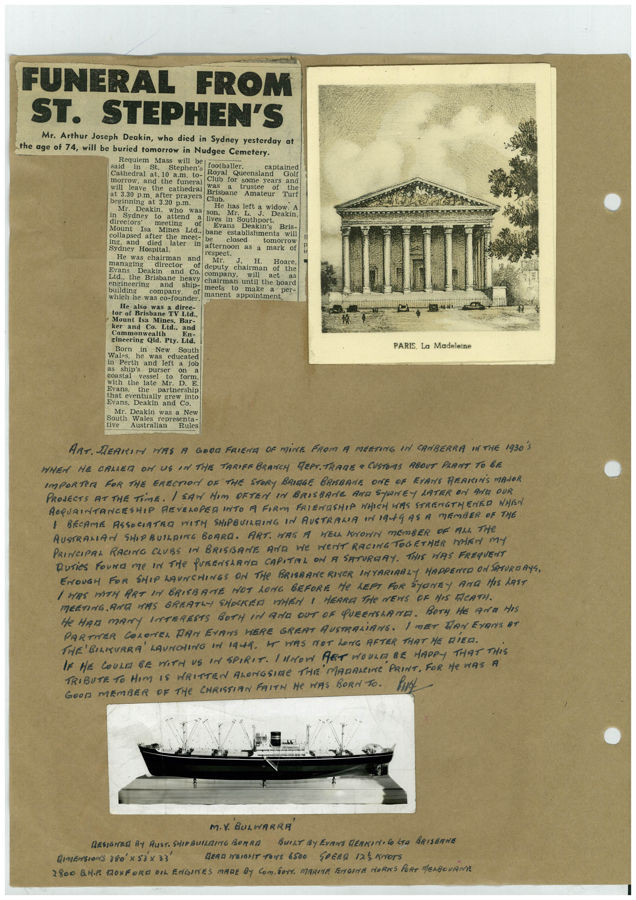

Book 1 · scan 076


Description
Transcription
Context
Review notes
Compare the machine draft with the scan. Handwriting and names need human review.
Artifacts
Edit the artifacts field in this note’s frontmatter to change these records. This summary is generated.
B01-S076-A01 — Newspaper clipping & Handwritten note — Book 1, scan 076
Types: Newspaper clipping, Handwritten note
Scope: Whole scanned page; individual items can be split out during review.
Caption: Not mapped yet.
Caption source: Not recorded yet.
Caption status: unmapped
Machine transcription
FUNERAL FROM ST. STEPHEN'S Mr. Arthur Joseph Deakin, who died in Sydney yesterday at the age of 74, will be buried tomorrow in Nudgee Cemetery. Requiem said in Mass will be St. Stephen's footballer, captained Cathedral at. 10 a.m. to- Royal Queensland Golf morrow, and the funeral Club for some years and will leave the cathedral was of the at 3.30 p.m. after prayers Brisbane Amateur Turf beginning at 3.20 p.m. Club. Mr. Deakin, who was in son. Sydney to attend He has left a wideakin. directors' Deakin, lives Mr. in Southport. Mount Isa muccumng of Evans Mines Ltd.. bane Deakin's Bris- collapsed after the establishments will meet- ing. and died later closed Sydney Hospital. afternoon as tomorrow He was chairman and respect. mark of managing MT. J. H. director Hoare, Evans Deakin of deputy and Co. chairman of the Ltd. the Brisbane heavy company. will act as engineering building and ship- chairman until the board meets company. make which he was co-founder. of manent appointment. per- He also was a direc- tor of Brisbane TV Ltd., Mount Isa Mines, Bar- ker and Co. Ltd., and Commonwealth En- gineering Qld. Pty. Ltd. Born in New South Wales. he was educated in Perth and left a job as ship's purser coastal vessel to on form. with the late Mr. Evans. the 38. E. partnership that eventually grew into Evans, Deakin and Co. Mr. Deakin was a New South Wales tive representa- Australian Rules -144 PARIS. La Madeleine ART. DEARIM HAS A GOOD FRIENE OF MiNE FROM A MEETING IN CANBERRA IN THE 1930 S WHEN HE CALLER ON US IN THE TARIFE BRANCH REPT. TRADE a CUSTOMS RBOUT PLANT TO BE IMPORTER FOR THE ERECTION OF THE STORY BRIAGE BRISBANE ONE OF EXANS REAIINS MANOR PROJECTS AT THE TimE. I SAW HIM OFTEN IN BRISBANE AMR STONEY LATER ON ANA QUR ACQUAINTANCESHIP REVELOPED INTO A FIRM FRIENDSHIP WHICH HIS STRENGTHENED WHEN 1 BECAME ASSOCIATRO WITH SHIPBUILRING IN AUSTRALIA IN 19AGAS A MEMBER OF THE AUSTRALIAN SHOPBUILRIME BOARA. ART. WAS A WELL KNOWN MEMBER OF ALL THE PRINCIPAL RACING CLUBS IN BRISBANE AND WE WeNT RACING TOGETHER MEN mY Duries Four me In THe PURENSeRNE CAPITAL ON A SATURDAY. THIS HAS FREqUENT ENOUGH FOR SHIP HAUNCHINGS ON THe BRISRANe RIVER INTARIRBLY HAPPENED ON SATURDAYS, I MAS DATH ART IN BRISBANE HOT LONG BEFORE He LEFT FOR SYONTY AND HIS LAST MEETING ANA HAS GREATLY SHOCKED WHEN I HEARE THe NEWS OF HIS FACATH. He HAM mANY INTERESTS BOTH iN AND DUT OF QUEENSLAMA. BOTy HE AND HIS PARTNER COLONEL DAN EVANS HERE GREAT AUSTRALiANS. I mET DAN EVAN'S AT THE'BILKURRA LAUNCHING IN 1944. HE WAS MOT LONG AFTER THAT HE DIED. MADANCINe PRINT, FOR He WAS A GOOD MEMBER OF THe CHRISTIAN FAITH He HAS BORN TO. M.Y. BULWARRA RESIGNER BY RUST. SHIP BUILING BORRA BUILT BY EVANS GERKIN• Co LTO BRISBANE DIMEnsionS 380'x 53x 33' GERR WEIGHT TONS 6500 SPEND 125 KNOTS 2800 BM. TOXFORD DIL ENGINES MARE BY COM, SOTT. MARITA FENGINE MORNS PORT MENGOURME